-
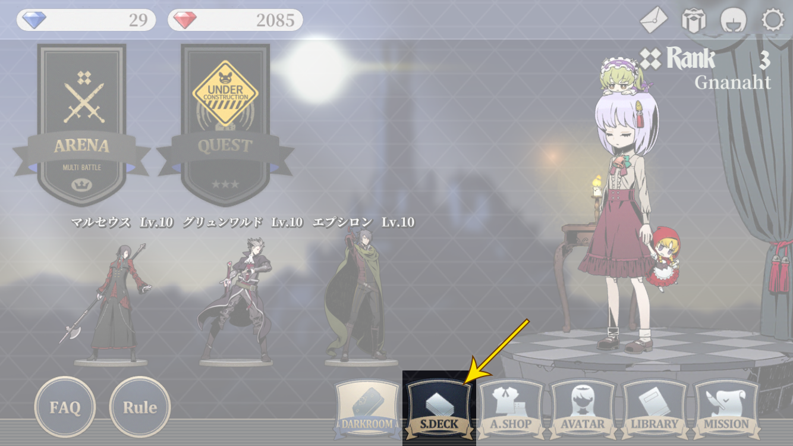서플라이 및 덱을 편집하는 방법을 알아봅니다.
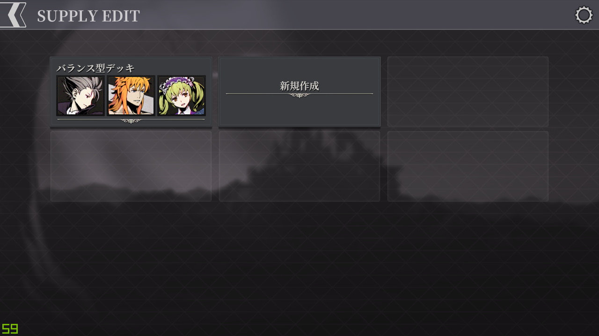
덱편집에 들어오면 (편집할) 덱 선택 화면을 볼 수 있습니다.
왼쪽 상단 화살표를 누르면 다시 메인 화면으로 돌아갑니다.
※ 오른쪽 상단의 톱니바퀴는 메인 화면의 톱니바퀴와 기능이 동일합니다.
- 최대 6개의 덱을 저장할 수 있으며, 현재 스크린샷에는 1개의 덱이 저장되어 있고 5개의 빈 공간이 있음을 볼 수 있습니다.
- 마지막으로 저장된 덱 바로 옆에는 "新規作成(신규작성)" 문구가 위치하며, 클릭하여 새로운 덱을 작성할 수 있습니다.
- 저장한 덱을 클릭하면 해당 덱을 다시 편집할 수 있습니다.
- 덱을 저장할 때 이름을 붙일 수 있으며, 현재 스크린샷에는 [バランス型デッキ(밸런스형덱)]이라는 이름을 볼 수 있습니다.
-
덱을 작성하는 법에 대해서 알아봅니다.
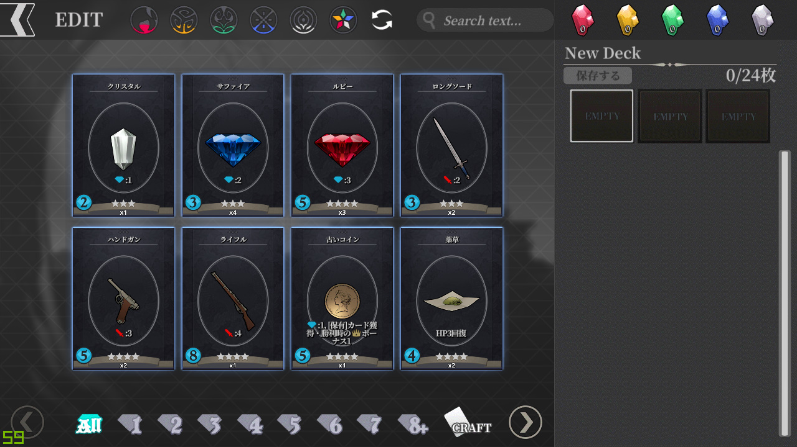
"신규작성"을 누를 경우, 다음과 같은 화면이 등장합니다.
왼쪽 상단 화살표를 누르면 덱 선택 화면으로 돌아가는데, 편집중인 덱이 있다면 저장할 것인지 묻습니다.
- 오른쪽 상단의 덱 이름을 클릭하면 편집할 수 있습니다. 기본값은 "New Deck"입니다.
- 오른쪽 상단에서 편집중인 덱에 들어간 카드의 수를 확인할 수 있습니다. 초기값은 "0/24枚(매)"이고 최대값은 "24/24매"입니다.
- 덱 이름 밑에는 "保存する(보존하기)" 버튼이 있는데, 편집중인 덱에 변경사항이 생길경우 클릭할 수 있습니다. 클릭할 경우 변경사항을 적용할 수 있습니다.
- 왼쪽에 등장하는 카드는 현재 보유하고 있는 카드들이고, 오른쪽으로 드래그해 편집중인 덱에 추가할 수 있습니다.
-
덱은 각 8개의 카드를 순서대로 넣을 수 있는 3개의 칸으로 구성됩니다. 각 칸을 클릭해 해당 칸에 대해 편집을 할 수 있습니다.
※ 위의 스크린샷에서는 첫번째 칸이 선택되어있고, 흰색 테두리로 그것을 알 수 있습니다.
"ロングソド(롱소드)"를 드래그해서 오른쪽으로 이동시켜 덱에 추가했습니다.
카드를 덱에 추가하면- GEM과 함께 숫자가 표기됩니다. 이는 해당 카드를 구매하는 데에 필요한 구매력을 보여줍니다.
- 그 다음으로 카드의 이름과 일러스트가 보입니다.
-
하나의 덱에 넣을 수 있는 최대 수량과 현재 추가된 수량을 알려줍니다.
※ 위의 스크린샷에서 [1/3]은 해당 카드를 하나의 덱에 최대 3개까지 넣을 수 있고, 현재 1개가 들어가 있음을 알려줍니다.
이 상태에서 왼쪽 상단 화살표를 눌러 나가려고 시도해봅니다.
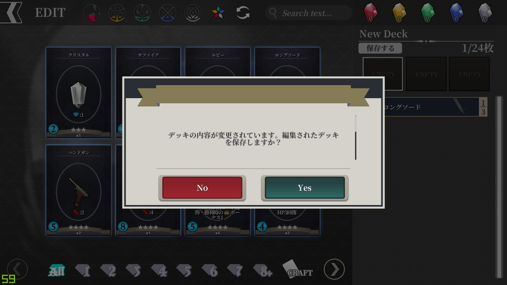
"덱의 내용이 변경되었습니다. 편집된 덱을 저장하겠습니까 ?"라고 묻습니다.
"Yes"를 누르면 편집한 덱이 저장되고, "No"를 누르면 저장되지 않습니다.
위에서 "Yes"를 누를 경우 또 다시 알림창이 뜹니다. 1칸만 채운 채로 저장을 시도했기 때문입니다.
"덱의 카드 수가 규정 매수에 맞지 않습니다. 이 덱으로 듀얼에 참가할 수 없습니다. 저장하겠습니까 ?"
여기서도 "Yes"를 누르면 편집한 덱이 저장되고, "No"를 누르면 저장되지 않습니다.
- 위의 문구에서 언급하는 듀얼은 메인 화면에서 볼 수 있는 [ARENA] 컨텐츠를 말합니다.
-
24매를 모두 채웠으며, 각 칸마다 최소 1개의 [액션 카드]를 포함하는 덱은 듀얼에 사용할 수 있습니다.
※ 극단적인 예시로, 각 칸마다 7개의 [아티팩트 카드]와 1개의 [액션 카드]를 채워도 듀얼에 사용할 수 있습니다. -
각 칸에 추가하는 [액션 카드]는 동일한 캐릭터의 것이어야 합니다.
※ 첫번째 칸에 [아벨]의 [액션 카드]를 넣었다면, 해당 칸에 다른 캐릭터의 [액션 카드]를 더 이상 넣을 수 없게 됩니다. 즉, 하나의 덱에는 최대 3가지 캐릭터(의 [액션 카드])를 넣을 수 있습니다.
편집한 덱을 성공적으로 저장하면 다음과 같이 "보존했습니다"라는 알림창을 던져줍니다.
"閉じる(닫기)"를 눌러 나갑시다.
방금 편집한 덱(New Deck)이 저장되어 있는 것을 볼 수 있습니다.
[액션 카드]를 넣지않았기 때문에, 덱을 대표하는 캐릭터가 없어 3칸 모두 비어있습니다.
-
덱을 삭제하는 법에 대해서 알아봅니다.
방금 만든 덱을 눌러 다시 덱편집 화면으로 돌아옵니다.
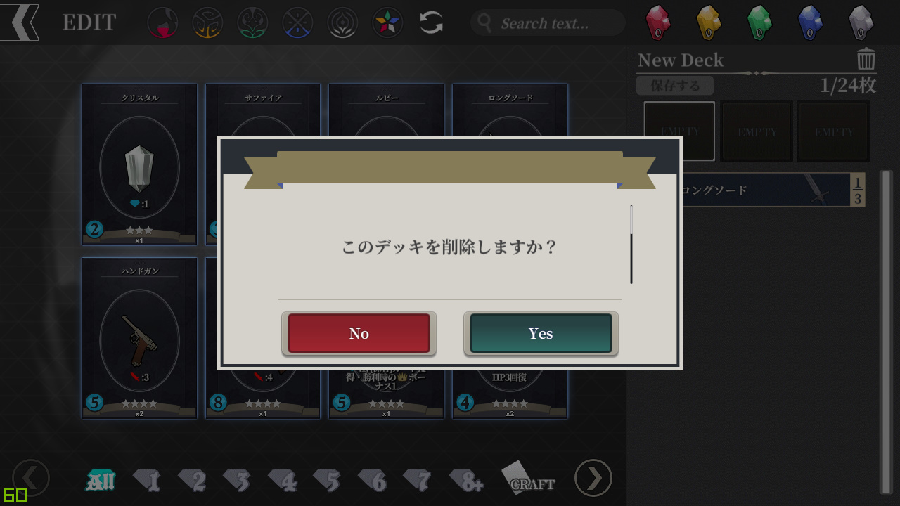
오른쪽 상단의 휴지통 모양의 아이콘을 누르면 다음과 같이 묻습니다.
"이 덱을 삭제하겠습니까 ?"
"Yes"를 누르면 덱이 삭제되고, "No"를 누르면 덱이 삭제되지 않습니다.
"Yes"를 누르면 "삭제했습니다"라고 알려줍니다.
"닫기"를 누르면 다시 덱선택 화면으로 돌아옵니다.
-
전형적인 덱편집의 예시를 알아봅니다.
"신규작성"을 눌러 덱편집 화면으로 들어옵니다.
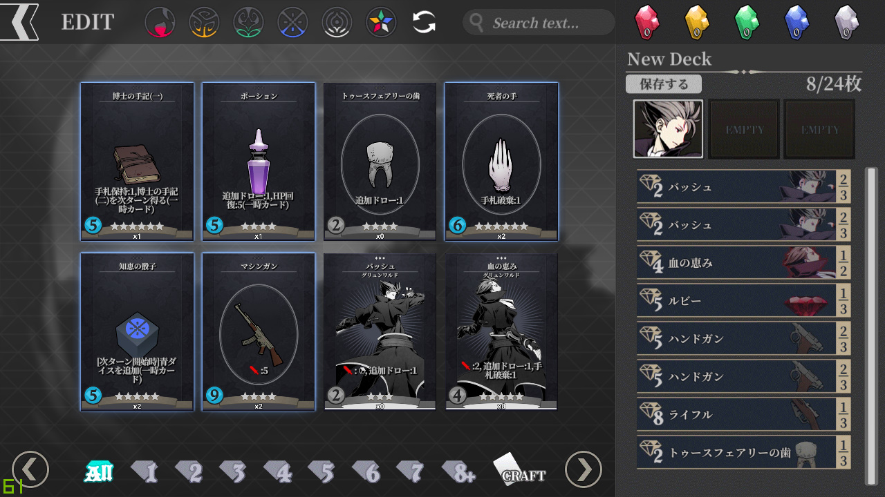
왼쪽 하단의 화살표로 현재 보유중인 카드들을 둘러볼 수 있습니다.
적당한 [액션 카드]와 [아티팩트 카드]로 첫번째 칸을 채워봅니다.
-
이전 덱편집과는 달리, 첫번째 칸에 [그룬왈드]의 일러스트가 생겼습니다. 이처럼 특정 칸에 어떤 캐릭터(의 [액션 카드])가 들어갔는지 파악할 수 있습니다.
※ 이전 덱편집에서는 [액션 카드]를 넣지않았기 때문에 일러스트가 없었습니다. -
편집된 덱은 게임 화면에서 [서플라이]로 등장하고, 각 칸의 카드들은 맨위부터 순서대로 구입할 수 있습니다.
※ 이에 대해서는 추후 자세히 설명합니다. - 다른 TCG게임들과는 달리, 스킷소는 게임을 진행하면서 필요한 카드들을 구매하여 덱을 키워갑니다.
- 따라서, 덱을 편집할 때 초반에 구입하기 쉬운 -필요한 구매력이 낮은- 카드들부터 위로 배치하는 것이 좋습니다.
두번째 칸을 눌러, 편집할 칸을 변경합니다.
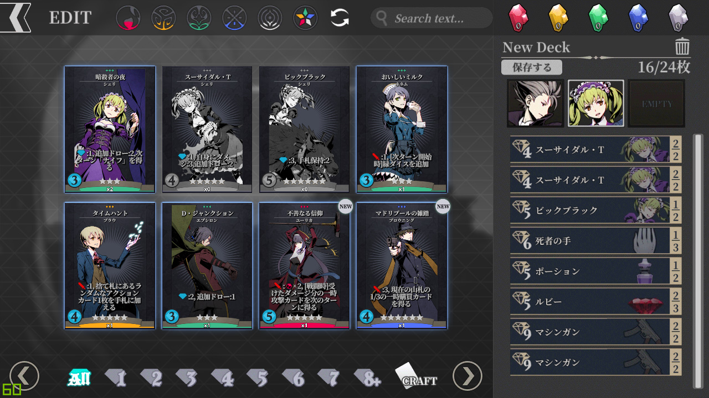가격(필요한 구매력)이 싸고 추가드로우 기능이 있는 카드들부터 채워봅시다.
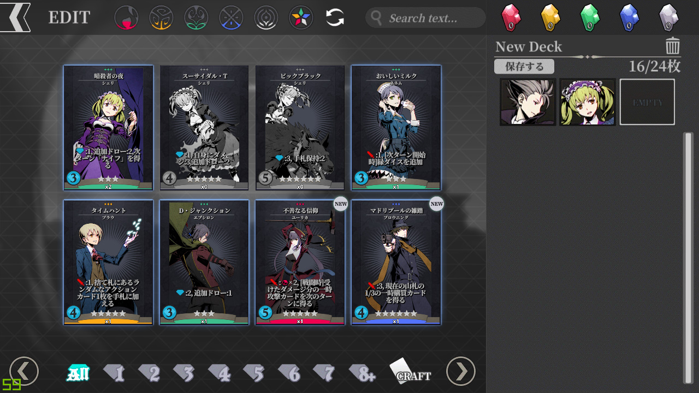세번째 칸을 눌러, 편집할 칸을 변경합니다.

그나마 다양한 카드를 가지고 있는 캐릭터가 3개뿐이라 이렇게 마무리합니다.
위에서도 설명했지만, 하나의 칸에는 한 종류의 캐릭터(의 [액션 카드])만을 추가할 수 있기 때문입니다.
마지막으로 덱의 이름을 지어줍시다. "New Deck"을 클릭하면 다음과 같이 편집창이 뜹니다.
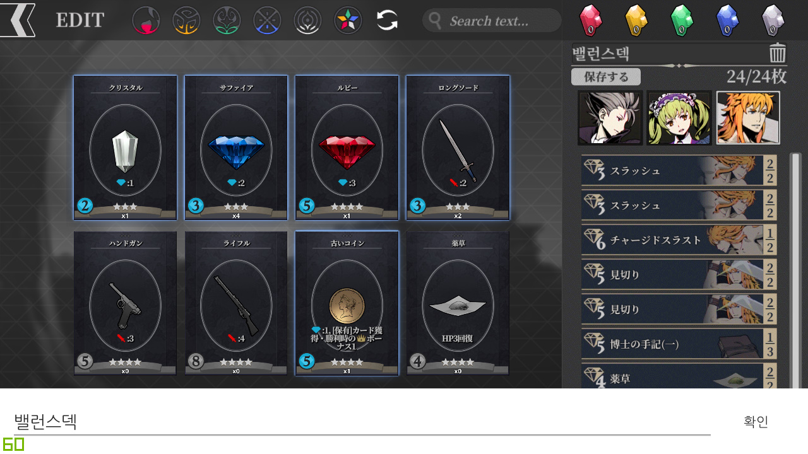저는 "밸런스덱"이라고 이름을 짓겠습니다.
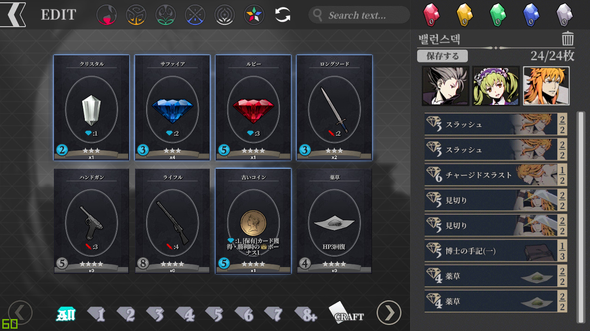"확인"을 눌러 저장할 준비를 모두 마칩시다.
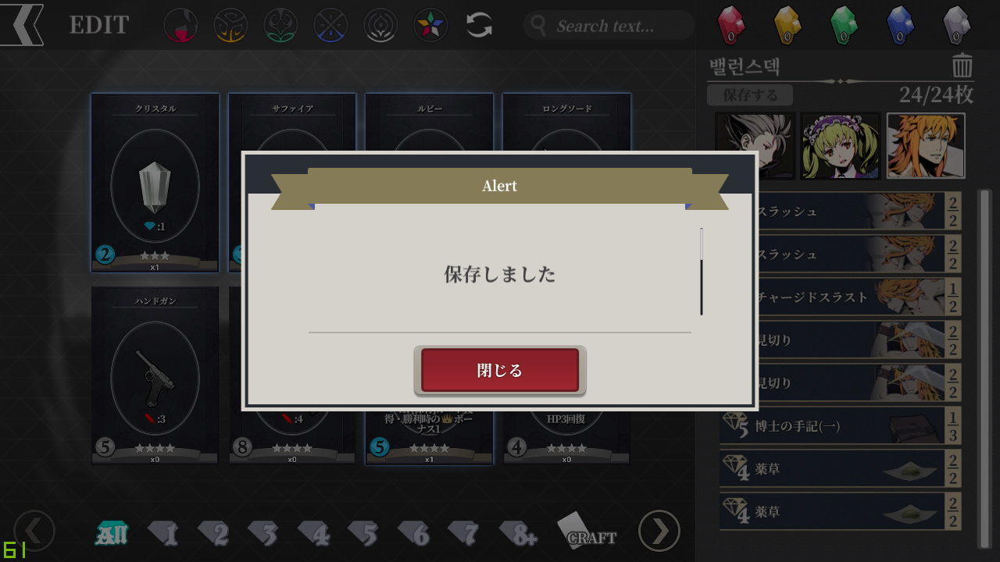
"保存する(보존하기)"를 누르면 다음과 같이 "보존했습니다"라고 알려줍니다.
위에서 설명했던 듀얼에 사용할 수 있는 덱의 조건을 만족하므로, 별도의 경고문은 나오지 않습니다.
"閉じる(닫기)"를 누르면 덱선택 화면으로 돌아옵니다.
또한, 방금 편집한 덱이 정상적으로 저장돼 있음을 확인할 수 있습니다.
-
이상으로 하위메뉴 []편을 마칩니다.
하위메뉴 []편으로 내용이 이어집니다.